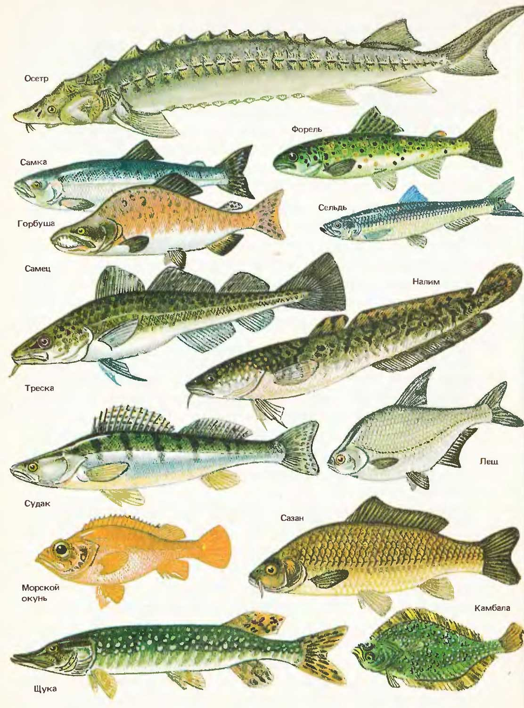
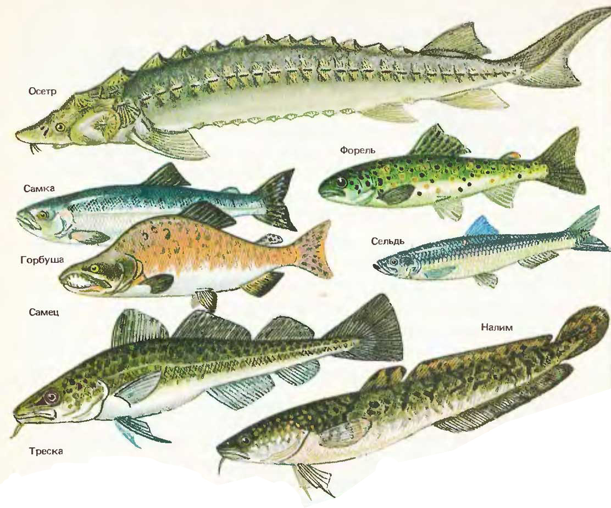
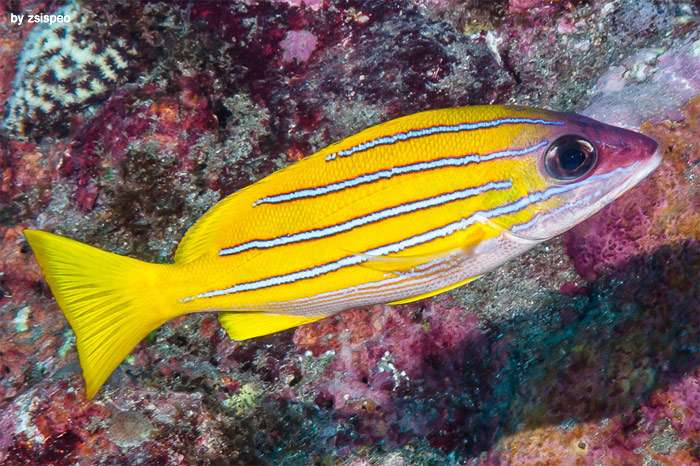

Костные рыбы
Древнейшие известные окаменелости костных рыб относятся к лудловской эпохе силурийского периода (около 425 млн лет назад). Сейчас спорно, от кого они вместе с хрящевыми произошли: от плакодерм или акантод. После девонского вымирания, когда вымерли плакодермы, в морях стали господствовать костные и хрящевые рыбы, не имея конкурентов.
Как и у лохов хрящевых рыб, кожа костных рыб состоит из многослойного эпителия и подстилающего волокнистого соединительнотканного кориума. Многочисленные одноклеточные железы эпидермиса выделяют слизистый секрет, покрывающий тонким слоем тело рыбы. Эта слизистая пленка способствует уменьшению трения при плавании и, благодаря своим бактерицидным свойствам, препятствует проникновению в кожу бактерий. В одноклеточных железах кожи рыб, преимущественно мирных, содержится секрет, выделяющийся только при ранении кожи и служащий предупреждением об опасности — так называемое «вещество страха». При определенном состоянии рыб выделяемые кожными железами вещества — феромоны — стимулируют брачное поведение.
У костных рыб хрящ в скелете в той или иной степени замещается костной тканью: образуются основные или замещающие кости. Кроме этого, в коже возникают покровные кости, погружающиеся потом под кожу и входящие в состав внутреннего скелета. Скелет костных рыб подразделяется на осевой скелет, череп (мозговой и висцеральный), скелет непарных плавников, скелет парных плавников и их поясов.
Как и у хрящевых рыб, поперечнополосатая соматическая мускулатура костных рыб отчетливо сегментарна и состоит из мышечных сегментов, имеющих сложную форму. Часть из них частично перестроилась, образовав группы мышц: глазные, наджаберные и поджаберные мышцы, мышцы парных плавников. Висцеральная мускулатура, окружающая пищеварительную трубку представлена слоями гладких мышц. В области челюстных и жаберных дуг гладкие мышечные волокна замещаются поперечнополосатыми волокнами, формирующими сложно дифференцированную мускулатуру челюстных и жаберных дуг. В отличие от хрящевых рыб содержание мочевины в мышцах костных рыб ничтожно и обычно не превышает 0,0005—0,02%.
Нейтральная плавучесть костных рыб обеспечивается прежде всего специальным гидростатическим органом — плавательным пузырем; одновременно он выполняет и некоторые добавочные функции. У лучеперых непарный тонкостенный, заполненный газом плавательный пузырь развивается как полый вырост спинной поверхности начальной части пищевода. У так называемых открытопузырных рыб (костные и хрящевые ганоиды, сельдеобразные, карпообразные и др.) плавательный пузырь сохраняет связь с пищеводом, а у закрытопузырных рыб (окунеобразные и другие) вскоре после вылупления личинки пузырь полностью обособляется. У двоякодышащих и кистеперых рыб роль плавательного пузыря выполняют легкие, образующиеся как парный вырост брюшной стенки пищевода; только у рогозуба он, видимо, вторично стал непарным. Первоначальное заполнение пузыря газом у всех рыб проходит путем заглатывания атмосферного воздуха. Малек должен подняться на поверхность и, заглатывая воздух, заполнить им плавательный пузырь, после чего проток закрывается. Если это не удается, дальнейшее развитие нарушается и малек гибнет.